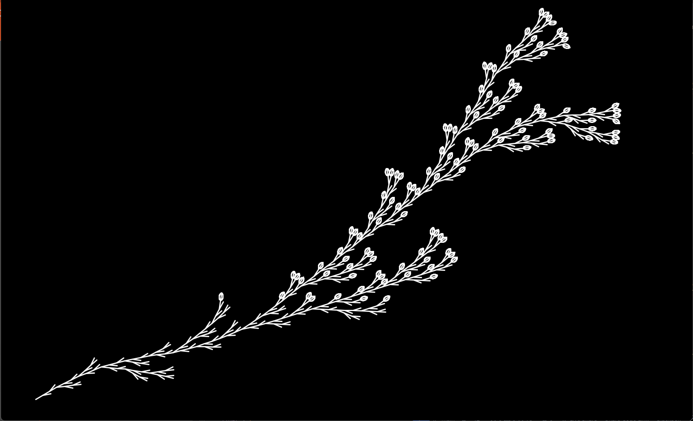
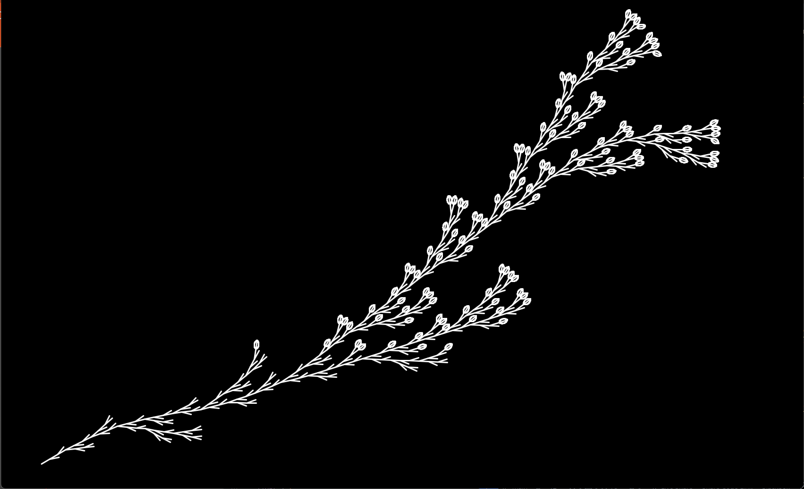

Mini #1 - "Seeing Is Believing"
Examples of Computational Design
Computational Design in Nature
Botanical World Example

Physarum Polycephalum, or Slime mold is a single-celled amoeboid organism that is capable of forming complex networks of veins to transport nutrients. This organism is particularly interesting because it is capable of solving complex problems, such as finding the shortest path between two points. The organism first spreads as a dense mesh to locate food. Once the mold has found nutrients it relies on sensory feedback from protoplasmic streaming to refine its mesh structure into optimal pathways. In the image above, slime mold is used to map the Tokyo train system. The organism is placed on a map of Tokyo with food placed at the locations of the train stations. The slime mold then forms a network of veins that connects the food sources, which is a close approximation of the Tokyo train system.
Kay, R., Mattacchione, A., Katrycz, C. et al. Stepwise slime mould growth as a template for urban design Sci Rep 12, 1322 (2022).
Zoological World Example

The Nautilus is a cephalopod that is closely related to the squid and octopus. The Nautilus is unique in that it has a shell that is divided into chambers. The chambers are arranged in a logarithmic spiral, which is a spiral that grows at a constant rate. The Nautilus is born with a small shell and as it grows it adds new chambers to the shell. The Nautilus is able to control the size of the chambers it adds to its shell, which allows it to maintain neutral buoyancy. The Nautilus is able to control its buoyancy by actively adjusting the concentration of ions within the chamber solution to exchange gas and liquid as needed. The Nautilus is able to control the amount of gas and liquid in each chamber by using a siphuncle, which is a tube that connects each chamber to the animal's body. The Nautilus is able to move up and down in the water column by adjusting the amount of gas and liquid in each chamber.
Siphuncle Controls Buoyancy NautilusesEnvironment Built by Organisms Example
The Baya Weaver is a weaverbird indigenous to the Indian Subcontinent and Southeast Asia. The Baya Weaver is known for its elaborate nests that are woven from grasses and palm leaves. It has been shown to be able to survive on trees up to 4 meters tall. The retort-shaped pendulous nests feature a central nesting chamber and a long vertical tube that serves as a side entrance to the chamber. The weavers often build these nests on the eastern side of a tree to protect the flock from monsoons that tend to come from the southwest.
Baya WeaverComputational Design in The Human-Built Environment
Architectural Example
Computational design is used in architecture to create complex forms that would be difficult to design by hand. The architects Zaha Hadid and Frank Gehry are known for their complex designs that are made possible by computational design. Zaha Hadid's Galaxy SOHO building in Beijing, China features a complex curved facade that was designed using parametric design. Frank Gehry's Peix Olimpic building in Barcelona, Spain features a complex curved facade that was also designed using parametric design.
What Is Parametric Design in Architecture, and How Is It Shaping the Industry?
Textile Design Example

Computational design is used in textile design to create complex patterns that would be difficult to design by hand. Computational design is used to create patterns for woven fabrics, knitted fabrics, and printed fabrics. The image above shows a variety of woven fabric patterns that were created using computational design.
Researchers/Artists/Designers of Computational Fabrication
Dan Schaub
Dan Schaub is a designer and artist that fabricates laser cut sculptures and wearable masks. His work is inspired by visionary art and esoteric symbology. I am drawn to Dan's intricate designs because they strictly follow a set a geometric rules. The designs are then altered by adjusting variables within the rule set.
Mahdi Fard
Mahdi Fard is an integrated computational designer from Iran whose
expertise lies in Integrated Design within the realm of
Architecture. He has cultivated a reputation for his adept
handling of data flows, particularly in the context of Engineering
Design, spanning a diverse range of Algorithmic Engineering
consultancy projects in Iran. Notably, he serves as the lead
developer for Caddisfly 01.01, an exclusive Grasshopper3D add-on
tailored for the meticulous design of free-form structures. His
contributions have propelled the growth of Ardaena.com into a
thriving professional network.
What is most interesting to me is Mahdi's current research in the
realm of AI and the algorithmic integration of data flows, with a
specific focus on Generative Design rooted in Functional Paradigms
within the domain of Geometry.
Mahdi's Twitter
Ardaena.com
Generative Design and How to implement it in Architecture

 
